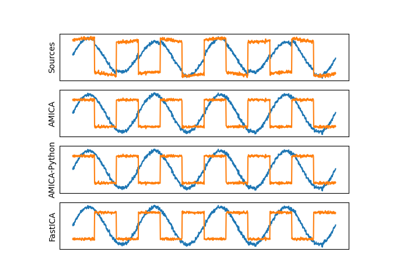
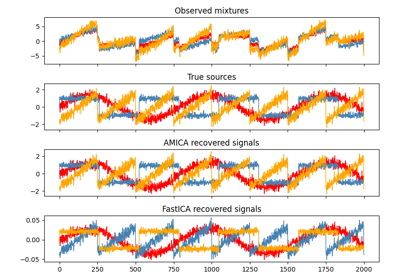

AMICA Tutorials¶
Example AMICA usage.

Run ICA On Toy Data
Sphering (whitening) data


Blind Source Separation with AMICA & ICA
Blind Source Separation with AMICA & ICA
ICA on 2D point clouds
Faces dataset decompositions
Example AMICA usage.
Blind Source Separation with AMICA & ICA